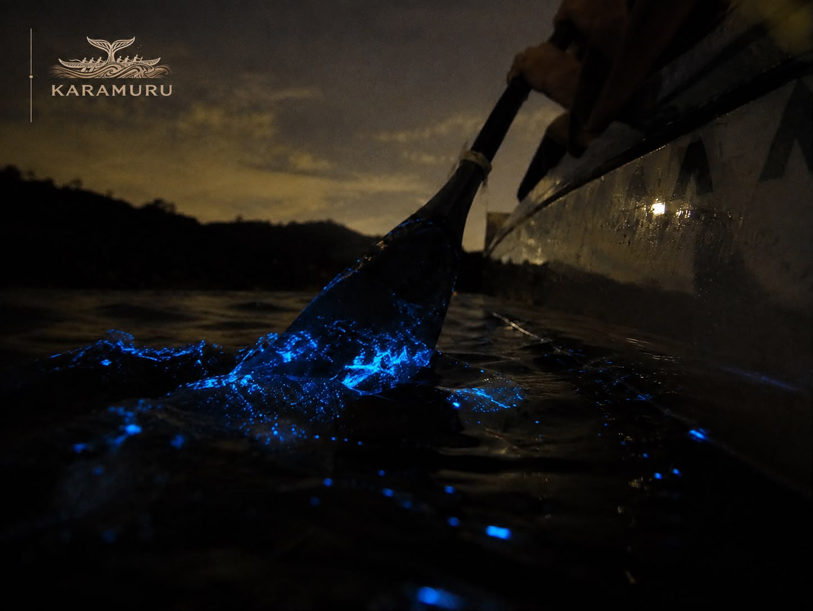
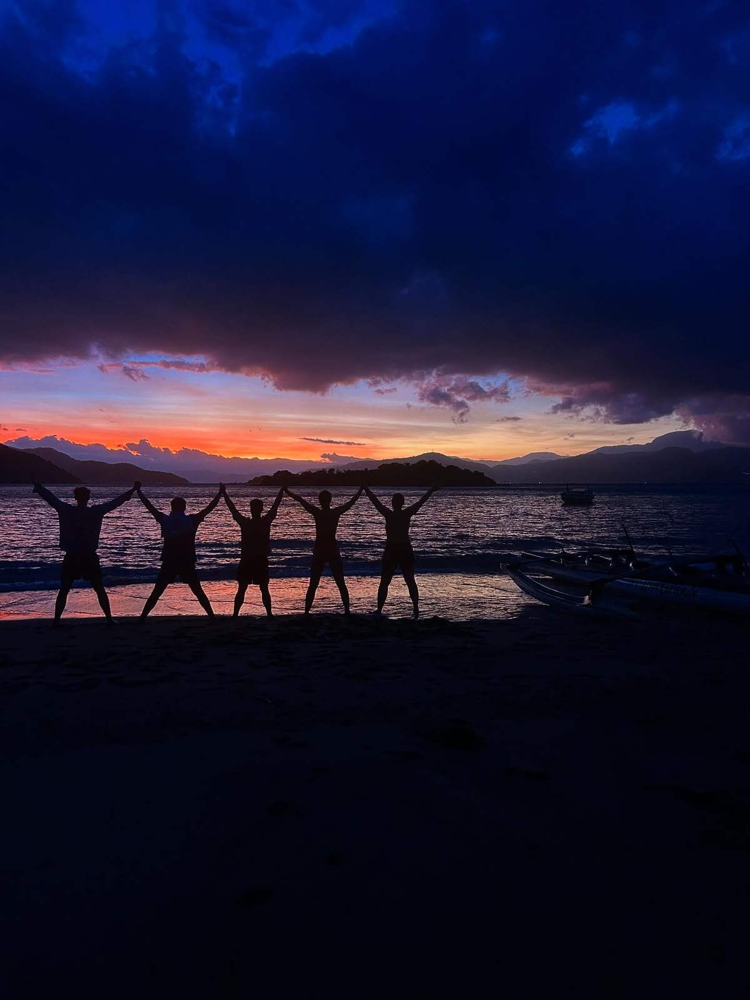
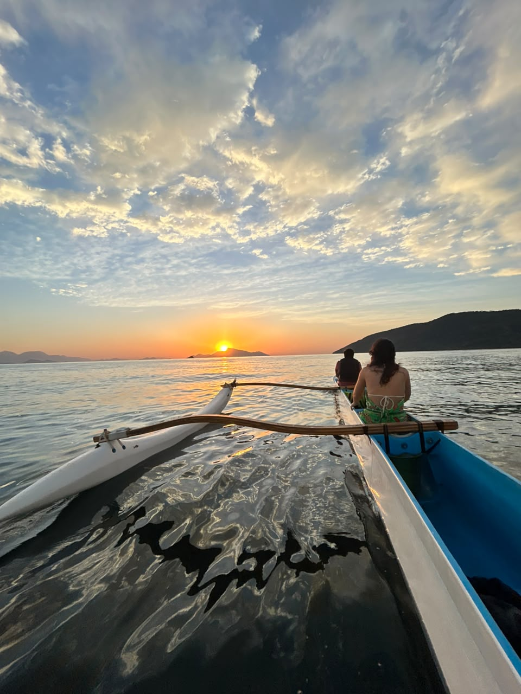
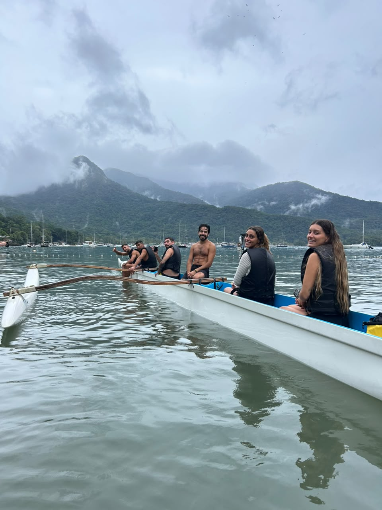
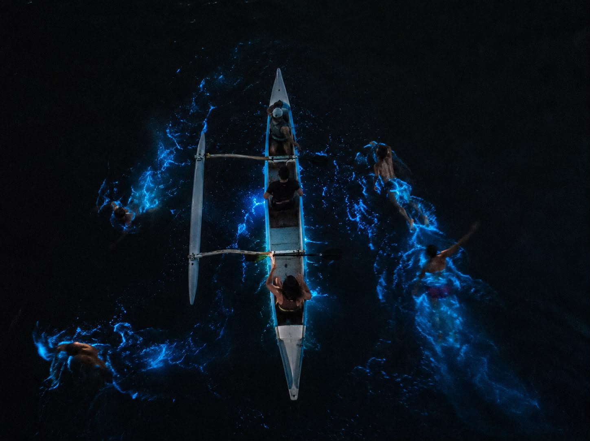
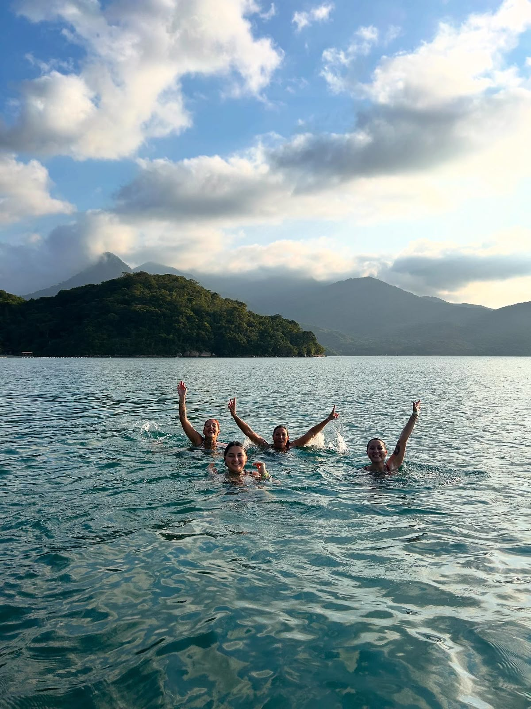

Trekking en la Montaña
¿DE QUE SE TRATA LA EXPERIENCIA DEL TREKKING? Nos encontramos en el punto acordado para realizar un breve calentamiento. Luego, nos dirigimos a la montaña, donde realizaremos una caminata de aventura. Durante el trekking, tendremos la oportunidad de observar la flora y fauna silvestre, disfrutar de hermosas vistas panorámicas y conectar con la naturaleza. Además, podremos registrar la experiencia con fotos y videos. 📸🌿🦅 A la vuelta, disfrutamos de un espacio de relajación y reflexión en la naturaleza.
info MÁS INFORMACIÓNExperiencias para Todos
En Karamuru Adventure, creemos que cada persona merece vivir una experiencia única en Ilha Grande. Nuestras actividades están diseñadas para todos los niveles de experiencia.
- check_circle Guías profesionales certificados
- check_circle Equipo de seguridad completo
- check_circle Experiencias personalizadas


Canoa Karamuru
¿DE QUE SE TRATA LA EXPERIENCIA DEL AMANECER? Nos encontramos en el punto acordado para realizar un breve calentamiento y recibir una explicación sobre la técnica de remo. Todavía de madrugada, salimos en canoa hawaiana por el mar y nos dirigimos hasta un punto especifico para contemplar el amanecer. Durante el paseo, tendremos la oportunidad de hacer snorkel entre hermosos corales, observar la vida marina, peces y, con suerte, tortugas, además de registrar la experiencia con fotos y videos. 🤿🐠🐢📸 A la vuelta, remamos por la costa de Ilha Grande, observando aves, la vegetación, las playas hasta regresar al punto de partida inicial.
water DESCUBRIR MAGIAUna experiencia única
Memorias inolvidables






¿Listo para la Aventura?
Contacta con nosotros para personalizar tu experiencia en Ilha Grande.
chat RESERVAR POR WHATSAPP